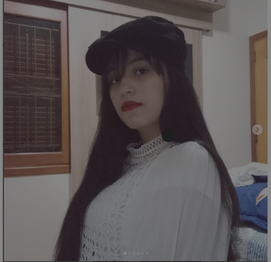

Olá! Sou Jessica Aquino Desenvolvedora Front-end Junior
Desenvolvedora web front-end Junior em desenvolvimento de aplicações web escaláveis e responsivas. Sou apaixonada por criar soluções tecnológicas que resolvem problemas reais e que agregam valor aos usuários.
Saiba Mais
